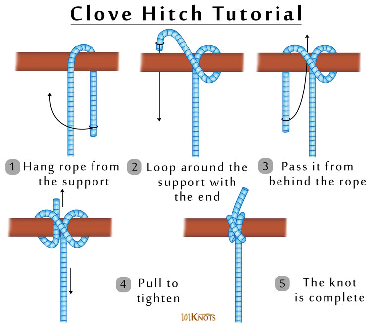

The clove hitch is an easy knot to tie, and it secures a line to a tree or post quickly, but it does slip when used alone, without any other knots as a backup.
How to tie a clove hitch:
To create a clove hitch on a tree, make a loop of rope around the tree. Then make another loop and pass the free end of the rope under the second loop before tightening. To tie this one over a post or stake, just create a loop in the free end of the rope and slide it over the post. Then make another loop the same as the first. Put the second loop over the post (just above the first loop) and tighten the hitch.
